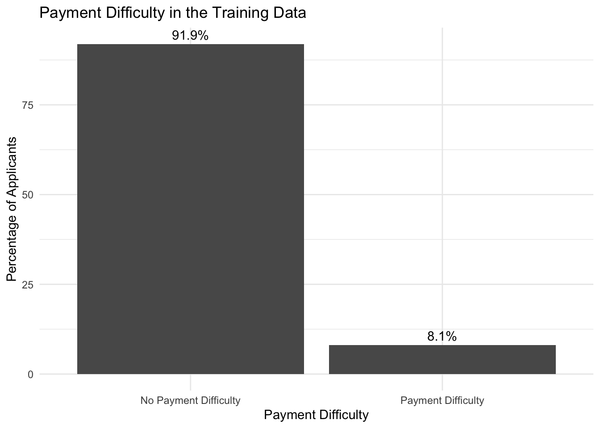
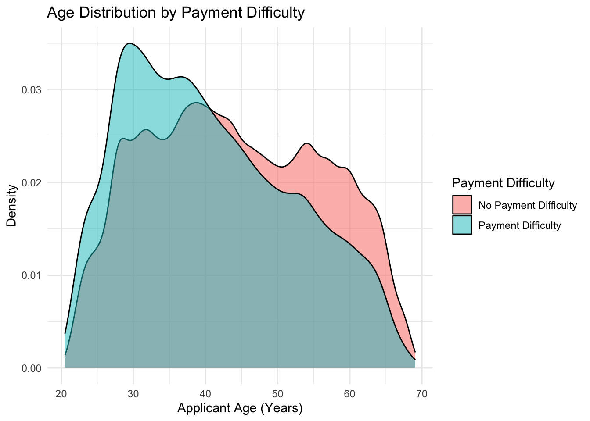
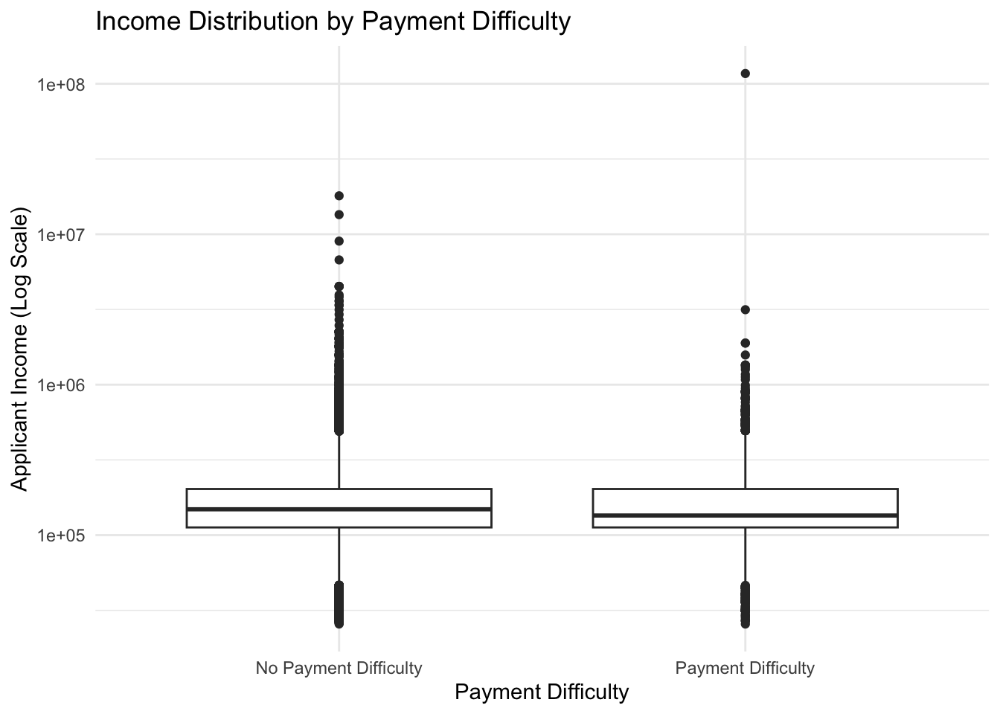

# Load packages used for data manipulation and visualization
library(tidyverse)
# Read the required Home Credit application datasets
application_train <- read_csv("Data/application_train.csv", show_col_types = FALSE)
application_test <- read_csv("Data/application_test.csv", show_col_types = FALSE)Home Credit Default Risk: Exploratory Data Analysis
Introduction
Home Credit provides consumer financing to customers who may have limited or no traditional credit history. The business problem is to distinguish applicants who are more likely to experience payment difficulties from applicants who are capable of repayment. Better identification of credit risk could help Home Credit reduce losses associated with payment difficulties while avoiding unnecessary rejection of applicants who are likely to repay.
The purpose of this exploratory data analysis is to understand the application data, identify data-quality issues that may affect later modeling, and investigate applicant characteristics that may be associated with payment difficulty.
EDA Questions
The analysis will address the following questions:
- How common is payment difficulty in the training data?
- How does applicant age differ between applicants with and without payment difficulty?
- How do income and requested credit amounts differ between applicants with and without payment difficulty?
- What relationships exist among key financial variables such as income, credit amount, and annuity amount?
- Which variables contain substantial missing data, unusual values, or other data-quality problems that must be addressed before modeling?
- Are the training and test datasets structurally consistent enough to support the planned predictive analysis?
Description of the Data
Dataset Dimensions
The first step is to examine the size of the training and test datasets.
# Report the number of rows and columns in each application dataset
data.frame(
Dataset = c("Training", "Test"),
Rows = c(nrow(application_train), nrow(application_test)),
Columns = c(ncol(application_train), ncol(application_test))
) Dataset Rows Columns
1 Training 307511 122
2 Test 48744 121The training dataset contains 307,511 applications and 122 variables, while the test dataset contains 48,744 applications and 121 variables. The one-column difference is expected because the training data contain the TARGET variable indicating whether an applicant experienced payment difficulty, while the test data require this outcome to be predicted. Before modeling, the remaining variables should be checked to confirm that the training and test datasets have consistent structures.
Training and Test Structure
Because the training dataset contains one additional column, the column names are compared to determine whether TARGET is the only structural difference.
# Identify columns that appear in only one of the two application datasets
train_only <- setdiff(names(application_train), names(application_test))
test_only <- setdiff(names(application_test), names(application_train))
data.frame(
Comparison = c("Training only", "Test only"),
Columns = c(
paste(train_only, collapse = ", "),
paste(test_only, collapse = ", ")
)
) Comparison Columns
1 Training only TARGET
2 Test only The comparison confirms that TARGET is the only column present in the training data but absent from the test data. All predictor columns are shared between the two datasets. This is the expected structure for a supervised prediction problem: the training data provide known outcomes for model development, while the test data contain the same applicant information without the outcome. Therefore, no predictor columns need to be reconciled between the two datasets based on column names.
Grain and Primary Key
The application datasets are expected to contain one row per loan application. The uniqueness of SK_ID_CURR is checked to determine whether it can serve as the primary key.
# Check whether SK_ID_CURR uniquely identifies each row in the application datasets
data.frame(
Dataset = c("Training", "Test"),
Rows = c(nrow(application_train), nrow(application_test)),
Unique_SK_ID_CURR = c(
n_distinct(application_train$SK_ID_CURR),
n_distinct(application_test$SK_ID_CURR)
),
Duplicate_SK_ID_CURR = c(
sum(duplicated(application_train$SK_ID_CURR)),
sum(duplicated(application_test$SK_ID_CURR))
)
) Dataset Rows Unique_SK_ID_CURR Duplicate_SK_ID_CURR
1 Training 307511 307511 0
2 Test 48744 48744 0The number of unique SK_ID_CURR values equals the number of rows in both datasets, and no duplicate identifiers were found. This confirms that SK_ID_CURR uniquely identifies each application record in both the training and test data. For this analysis, the application tables therefore have a grain of one row per current loan application, with SK_ID_CURR serving as the primary key. No duplicate application records need to be removed based on this identifier.
Variable Groups
The application datasets contain many variables describing different aspects of an applicant and the requested loan. The Home Credit data dictionary is used to better understand the meaning of these variables and organize the information available for exploratory analysis.
# Load the Home Credit data dictionary
column_description <- read_csv(
"Data/HomeCredit_columns_description.csv",
show_col_types = FALSE
)
# Preview the structure of the data dictionary
glimpse(column_description)Rows: 219
Columns: 5
$ ...1 <dbl> 1, 2, 5, 6, 7, 8, 9, 10, 11, 12, 13, 14, 15, 16, 17, 18, 1…
$ Table <chr> "application_{train|test}.csv", "application_{train|test}.…
$ Row <chr> "SK_ID_CURR", "TARGET", "NAME_CONTRACT_TYPE", "CODE_GENDER…
$ Description <chr> "ID of loan in our sample", "Target variable (1 - client w…
$ Special <chr> NA, NA, NA, NA, NA, NA, NA, NA, NA, NA, NA, NA, NA, NA, NA…Based on the data dictionary, the application data include several major groups of information that may be useful for understanding payment difficulty. These include applicant demographics and household characteristics, employment and income information, loan and annuity characteristics, housing and property information, external credit scores, contact and document indicators, regional information, and credit bureau inquiry information. The TARGET variable is the outcome in the training data and indicates whether an applicant experienced payment difficulties. These groups provide different perspectives on an applicant’s financial situation and may contain useful predictors of repayment risk.
Data Integrity
Which Variables Contain Substantial Missing Data?
Missing data can affect both exploratory analysis and later predictive modeling. The training data are examined to identify variables with substantial missingness and determine which variables may require special treatment during data preparation.
# Calculate the number and percentage of missing values for each variable
missing_summary <- application_train |>
summarise(across(everything(), ~ sum(is.na(.)))) |>
pivot_longer(
cols = everything(),
names_to = "Variable",
values_to = "Missing"
) |>
mutate(
Percent_Missing = Missing / nrow(application_train) * 100
) |>
arrange(desc(Percent_Missing))
# Display the variables with the highest percentages of missing values
missing_summary |>
slice_head(n = 15)# A tibble: 15 × 3
Variable Missing Percent_Missing
<chr> <int> <dbl>
1 COMMONAREA_AVG 214865 69.9
2 COMMONAREA_MODE 214865 69.9
3 COMMONAREA_MEDI 214865 69.9
4 NONLIVINGAPARTMENTS_AVG 213514 69.4
5 NONLIVINGAPARTMENTS_MODE 213514 69.4
6 NONLIVINGAPARTMENTS_MEDI 213514 69.4
7 FONDKAPREMONT_MODE 210295 68.4
8 LIVINGAPARTMENTS_AVG 210199 68.4
9 LIVINGAPARTMENTS_MODE 210199 68.4
10 LIVINGAPARTMENTS_MEDI 210199 68.4
11 FLOORSMIN_AVG 208642 67.8
12 FLOORSMIN_MODE 208642 67.8
13 FLOORSMIN_MEDI 208642 67.8
14 YEARS_BUILD_AVG 204488 66.5
15 YEARS_BUILD_MODE 204488 66.5The missing-value analysis shows substantial missingness in several variables, particularly those describing housing and property characteristics. COMMONAREA_AVG, COMMONAREA_MODE, and COMMONAREA_MEDI each have approximately 69.9% missing values, while several apartment, floor, and building-related variables are missing for more than 65% of applications. Because these variables are unavailable for a large portion of applicants, relying heavily on them could reduce the amount of usable information available for consistent default-risk prediction. During data preparation, variables with very high missingness should be evaluated individually to determine whether they provide enough useful information to retain or impute; otherwise, they may be excluded from modeling.
# Examine whether missingness in a highly incomplete variable is associated with payment difficulty
application_train |>
mutate(
COMMONAREA_AVG_Missing = if_else(is.na(COMMONAREA_AVG), "Missing", "Not Missing")
) |>
group_by(COMMONAREA_AVG_Missing) |>
summarise(
Applicants = n(),
Payment_Difficulty_Rate = mean(TARGET) * 100,
.groups = "drop"
)# A tibble: 2 × 3
COMMONAREA_AVG_Missing Applicants Payment_Difficulty_Rate
<chr> <int> <dbl>
1 Missing 214865 8.57
2 Not Missing 92646 6.91Applicants with missing COMMONAREA_AVG values had a payment-difficulty rate of 8.57%, compared with 6.91% among applicants with non-missing values. This suggests that missingness in this variable is associated with payment difficulty and may contain useful predictive information rather than being purely random. Therefore, during data preparation, the missing values should not simply be ignored or the affected records automatically removed. The variable and its missingness should be evaluated as potential information for the predictive model.
Are There Unusual Numeric Values That Could Affect the Analysis?
Several variables represent applicant characteristics and time measurements. Selected variables are examined for unusual or potentially unrealistic values that could affect interpretation or later modeling.
# Examine ranges for selected numeric variables
application_train |>
summarise(
Min_Days_Birth = min(DAYS_BIRTH, na.rm = TRUE),
Max_Days_Birth = max(DAYS_BIRTH, na.rm = TRUE),
Min_Days_Employed = min(DAYS_EMPLOYED, na.rm = TRUE),
Max_Days_Employed = max(DAYS_EMPLOYED, na.rm = TRUE),
Min_Income = min(AMT_INCOME_TOTAL, na.rm = TRUE),
Max_Income = max(AMT_INCOME_TOTAL, na.rm = TRUE),
Min_Credit = min(AMT_CREDIT, na.rm = TRUE),
Max_Credit = max(AMT_CREDIT, na.rm = TRUE)
)# A tibble: 1 × 8
Min_Days_Birth Max_Days_Birth Min_Days_Employed Max_Days_Employed Min_Income
<dbl> <dbl> <dbl> <dbl> <dbl>
1 -25229 -7489 -17912 365243 25650
# ℹ 3 more variables: Max_Income <dbl>, Min_Credit <dbl>, Max_Credit <dbl># Investigate the unusual DAYS_EMPLOYED value
application_train |>
summarise(
Records_365243 = sum(DAYS_EMPLOYED == 365243, na.rm = TRUE),
Percent_365243 = mean(DAYS_EMPLOYED == 365243, na.rm = TRUE) * 100
)# A tibble: 1 × 2
Records_365243 Percent_365243
<int> <dbl>
1 55374 18.0The value 365243 appears in 55,374 records, representing approximately 18.0% of the training data. This is not a realistic number of employment days and appears to represent a special value rather than an actual employment duration. During data preparation, this value should therefore be treated separately rather than as a valid number of employment days so that it does not distort the relationship between employment history and payment difficulty.
Does DAYS_BIRTH Contain Unrealistic Applicant Ages?
DAYS_BIRTH contains negative values because age is recorded as the number of days before the current loan application. Converting these values to approximate ages will make the range easier to interpret.
# Convert DAYS_BIRTH to approximate age in years and examine the range
application_train |>
summarise(
Min_Age = min(-DAYS_BIRTH / 365.25, na.rm = TRUE),
Max_Age = max(-DAYS_BIRTH / 365.25, na.rm = TRUE),
Average_Age = mean(-DAYS_BIRTH / 365.25, na.rm = TRUE)
)# A tibble: 1 × 3
Min_Age Max_Age Average_Age
<dbl> <dbl> <dbl>
1 20.5 69.1 43.9After converting DAYS_BIRTH from days to approximate years, applicant ages range from 20.5 to 69.1 years, with an average age of 43.9 years. These values appear reasonable for loan applicants. Therefore, the negative values in DAYS_BIRTH reflect how the variable is recorded rather than a data-quality problem.
Are There Unusual Values in the Categorical Variables?
Selected categorical variables are examined to identify unusual or unexpected category values that may require cleaning before modeling.
# Examine values in selected categorical variables
application_train |>
count(CODE_GENDER)# A tibble: 3 × 2
CODE_GENDER n
<chr> <int>
1 F 202448
2 M 105059
3 XNA 4application_train |>
count(NAME_FAMILY_STATUS)# A tibble: 6 × 2
NAME_FAMILY_STATUS n
<chr> <int>
1 Civil marriage 29775
2 Married 196432
3 Separated 19770
4 Single / not married 45444
5 Unknown 2
6 Widow 16088application_train |>
count(NAME_INCOME_TYPE)# A tibble: 8 × 2
NAME_INCOME_TYPE n
<chr> <int>
1 Businessman 10
2 Commercial associate 71617
3 Maternity leave 5
4 Pensioner 55362
5 State servant 21703
6 Student 18
7 Unemployed 22
8 Working 158774The categorical-value check identified a small number of unusual values. CODE_GENDER contains 4 records coded as XNA, while NAME_FAMILY_STATUS contains 2 records coded as Unknown. Because these values do not represent standard categories, they should be reviewed and handled explicitly during data preparation rather than automatically treated as valid categories. NAME_INCOME_TYPE also contains several rare categories, but these categories are interpretable and should be retained at this stage because low frequency alone does not indicate a data-quality problem.
Exploratory Results
How Common Is Payment Difficulty in the Training Data?
The TARGET variable identifies whether an applicant experienced payment difficulties. Examining its distribution shows how common payment difficulty is in the training data and whether the outcome is balanced.
# Calculate the number and percentage of applicants by TARGET outcome
target_summary <- application_train |>
count(TARGET) |>
mutate(
Percent = n / sum(n) * 100
)
target_summary# A tibble: 2 × 3
TARGET n Percent
<dbl> <int> <dbl>
1 0 282686 91.9
2 1 24825 8.07# Visualize the distribution of the TARGET outcome
ggplot(target_summary, aes(x = factor(TARGET), y = Percent)) +
geom_col() +
geom_text(
aes(label = paste0(round(Percent, 1), "%")),
vjust = -0.5
) +
labs(
title = "Payment Difficulty in the Training Data",
x = "Payment Difficulty",
y = "Percentage of Applicants"
) +
scale_x_discrete(
labels = c(
"0" = "No Payment Difficulty",
"1" = "Payment Difficulty"
)
) +
theme_minimal()
Payment difficulty is relatively uncommon in the training data. Approximately 8.1% of applicants experienced payment difficulty, while 91.9% did not. This creates a substantial class imbalance, meaning that a predictive model could appear accurate simply by favoring the much larger group without payment difficulty. Therefore, class imbalance should be considered when evaluating predictive models rather than relying only on overall accuracy.
Applicant Demographics
How Does Applicant Age Differ Between Applicants With and Without Payment Difficulty?
Applicant age is examined to determine whether payment difficulty varies across age groups. DAYS_BIRTH is converted to approximate age in years for easier interpretation.
# Compare applicant age by payment difficulty
age_summary <- application_train |>
mutate(
Age = -DAYS_BIRTH / 365.25
) |>
group_by(TARGET) |>
summarise(
Applicants = n(),
Average_Age = mean(Age, na.rm = TRUE),
Median_Age = median(Age, na.rm = TRUE)
)
age_summary# A tibble: 2 × 4
TARGET Applicants Average_Age Median_Age
<dbl> <int> <dbl> <dbl>
1 0 282686 44.2 43.5
2 1 24825 40.8 39.1Applicants who experienced payment difficulty were younger on average than applicants who did not. The average age was approximately 40.8 years for applicants with payment difficulty compared with 44.2 years for applicants without payment difficulty. The median ages show a similar pattern, at 39.1 and 43.5 years, respectively. This suggests that age may be associated with payment difficulty and could be useful to examine further during modeling.
# Visualize age distribution by payment difficulty
application_train |>
mutate(
Age = -DAYS_BIRTH / 365.25,
Payment_Difficulty = factor(
TARGET,
levels = c(0, 1),
labels = c("No Payment Difficulty", "Payment Difficulty")
)
) |>
ggplot(aes(x = Age, fill = Payment_Difficulty)) +
geom_density(alpha = 0.5) +
labs(
title = "Age Distribution by Payment Difficulty",
x = "Applicant Age (Years)",
y = "Density",
fill = "Payment Difficulty"
) +
theme_minimal()
The age distributions show that applicants with payment difficulty tend to be younger than applicants without payment difficulty. The payment-difficulty group is more concentrated among younger applicants, while applicants without payment difficulty have relatively greater representation at older ages. This pattern is consistent with the difference in average age observed above and provides additional evidence that age may be useful as a potential predictor during modeling.
How Do Income and Requested Credit Amounts Differ Between Applicants With and Without Payment Difficulty?
Applicant income is examined to determine whether income differs between applicants who did and did not experience payment difficulties. Because unusually large income values were identified during the initial data checks, both the average and median are compared.
# Compare income by payment difficulty
income_summary <- application_train |>
group_by(TARGET) |>
summarise(
Applicants = n(),
Average_Income = mean(AMT_INCOME_TOTAL, na.rm = TRUE),
Median_Income = median(AMT_INCOME_TOTAL, na.rm = TRUE)
)
income_summary# A tibble: 2 × 4
TARGET Applicants Average_Income Median_Income
<dbl> <int> <dbl> <dbl>
1 0 282686 169078. 148500
2 1 24825 165612. 135000Applicants who experienced payment difficulty had a lower median income than applicants without payment difficulty. The median income was 135,000 for applicants with payment difficulty compared with 148,500 for those without payment difficulty. The average incomes were more similar, which may partly reflect the influence of unusually large income values. This suggests that income may be associated with payment difficulty. Income should be retained as a potential predictor, while extreme income values should be examined during data preparation.
# Compare income distributions by payment difficulty
application_train |>
mutate(
Payment_Difficulty = factor(
TARGET,
levels = c(0, 1),
labels = c("No Payment Difficulty", "Payment Difficulty")
)
) |>
ggplot(aes(x = Payment_Difficulty, y = AMT_INCOME_TOTAL)) +
geom_boxplot() +
scale_y_log10() +
labs(
title = "Income Distribution by Payment Difficulty",
x = "Payment Difficulty",
y = "Applicant Income (Log Scale)"
) +
theme_minimal()
The income distributions overlap considerably between the two groups, although applicants with payment difficulty have a somewhat lower median income. The plot also shows several extreme income values, including a particularly large outlier. These values should be examined during data preparation because they may influence summary statistics and later modeling.
Loan Characteristics
How Do Requested Credit Amounts Differ Between Applicants With and Without Payment Difficulty?
The amount of credit requested may be related to an applicant’s ability to repay the loan. Credit amounts are compared between applicants who did and did not experience payment difficulty.
# Compare credit amount by payment difficulty
credit_summary <- application_train |>
group_by(TARGET) |>
summarise(
Applicants = n(),
Average_Credit = mean(AMT_CREDIT, na.rm = TRUE),
Median_Credit = median(AMT_CREDIT, na.rm = TRUE)
)
credit_summary# A tibble: 2 × 4
TARGET Applicants Average_Credit Median_Credit
<dbl> <int> <dbl> <dbl>
1 0 282686 602648. 517788
2 1 24825 557779. 497520Applicants with payment difficulty had a somewhat lower median requested credit amount than applicants without payment difficulty. The median credit amount was 497,520 for applicants with payment difficulty compared with 517,788 for those without payment difficulty. Although the difference is not large, it suggests that requested credit amount may contain some information related to payment difficulty. Therefore, credit amount should be retained and evaluated as a potential predictor during modeling.
What Relationships Exist Among Key Financial Variables Such as Income, Credit Amount, and Annuity Amount?
Income, credit amount, and loan annuity are examined together to determine whether these financial variables are strongly related. Strong relationships between predictors may be important to consider during later data preparation and modeling.
# Examine correlations among key financial variables
application_train |>
select(AMT_INCOME_TOTAL, AMT_CREDIT, AMT_ANNUITY) |>
cor(use = "complete.obs") AMT_INCOME_TOTAL AMT_CREDIT AMT_ANNUITY
AMT_INCOME_TOTAL 1.0000000 0.1568665 0.1916574
AMT_CREDIT 0.1568665 1.0000000 0.7701380
AMT_ANNUITY 0.1916574 0.7701380 1.0000000The financial variables show different levels of association with one another. AMT_CREDIT and AMT_ANNUITY have a relatively strong positive correlation of approximately 0.77, which is reasonable because larger loans generally require larger annuity payments. In contrast, applicant income has much weaker relationships with credit and annuity amounts. The strong relationship between credit and annuity suggests that these variables may contain overlapping information. Both should still be evaluated during modeling, but their relationship should be considered when assessing their predictive contribution.
Conclusion
The exploratory analysis identified several important characteristics and data-quality issues in the Home Credit application data. Payment difficulty occurs in approximately 8.1% of the training applications, creating a substantial class imbalance that should be considered when evaluating predictive models. Several housing and property variables contain more than 65% missing values and should be evaluated individually during data preparation to determine whether they provide enough information to retain or impute. Missingness in COMMONAREA_AVG was also associated with payment difficulty, with an 8.57% payment-difficulty rate when the value was missing compared with 6.91% when it was not missing. This suggests that missingness itself may contain useful predictive information. In addition, DAYS_EMPLOYED contains the special value 365243 for approximately 18.0% of applications and should be treated separately rather than as a valid employment duration.
The EDA also identified several variables that may contain useful information for predicting payment difficulty. Applicants with payment difficulty were younger on average, with an average age of 40.8 years compared with 44.2 years for applicants without payment difficulty. They also had a lower median income of 135,000 compared with 148,500 and a somewhat lower median requested credit amount of 497,520 compared with 517,788. These relationships do not establish causation, but they suggest that age, income, and credit characteristics should be evaluated as potential predictors during modeling. AMT_CREDIT and AMT_ANNUITY were also strongly positively correlated at approximately 0.77, indicating that they may contain overlapping information.
Overall, the EDA supports the business problem identified at the beginning of the project: payment difficulty appears to be associated with multiple aspects of an applicant’s financial and personal characteristics rather than a single variable. The analysis did not change the planned predictive-classification approach, but it clarified important data-preparation decisions and identified several variables and relationships that should be evaluated further during feature engineering and modeling.
AI Use
ChatGPT was used to assist with developing and debugging R code, organizing the exploratory analysis, and improving the clarity of written interpretations. All code was run in Positron, and the resulting tables and visualizations were reviewed before conclusions were added to the notebook. AI was useful for generating and troubleshooting code, while reviewing the outputs was necessary to determine which findings were meaningful for the Home Credit business problem and what decisions should be carried forward into data preparation and modeling.